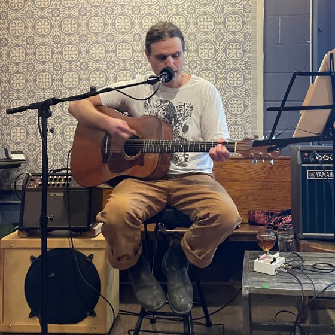
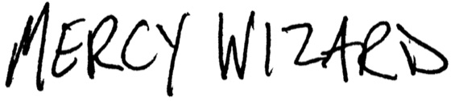

Singer-songwriter, solo performer. Originals and interpretations of classics and lesser-known gems, with emphasis on anthemic choruses and compelling chord changes.
Instagram
I primarily record as Mercy Wizard.

My recording handle.
I perform live as Mike Luz.
I am also a software engineer and enjoy tinkering with web-based music tools.
▸ Bloops generative synth & sequencer
▸ Tracks multitrack recorder for quick demos
▸ Player playlists backed by Google Drive
▸ Game bricks that compose as you play
▸ Bandcamp
▸ YouTube
▸ Instagram
▸ Substack